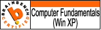

|
|
| . |
Разработчик Java/J2EE. Проектирование и разработка информационных систем (web/desktop). ООП/АОП.
Многоуровневые архитектуры. СУБД/SQL. Шаблоны проектирования. UML. RUP, гибкие методологии разработки. Индустриализация разработки.
Европейское образование. Дипплом инженера. 4 года опыта работы на международном уровне (страхование, IT-консалтинг, разработка ПО).
21 IT-сертификатов полученных в системе Brainbench.
Русский и украинский - родные языки, отличное владение французским и английским языками.
Целеустремленный и ответственный. Цель - стать архитектором ПО.
|
|
|
| 2008 |
| Teamlog Institute |
| Расположение : Париж, Франция |
Образовательные программы организованные Teamlog Institute
Еффективное общение, курсы английского языка (intermediate level) |
| Веб-сайт :
http://www.teamlog.com |
|
| 2004-2005 |
| Университет Пари-Эст Марн-ля-Валле ( Université Paris-Est Marne-la-Vallée ) |
| Расположение : Шамп-сюр-Марн, Франция |
Специальность «Коммуникации, Сеть, Изображение».
Диплом инженера (Master Degre) по созданию программного обеспечения. |
| Веб-сайт :
http://www.univ-mlv.fr |
|
| 2005 |
| Национальная консерватория исскуств и профессий(CNAM) |
| Расположение : Шамп-сюр-Марн, Франция |
Экономический менеджмент предприятий для инженера.
Социальный менеджмент. |
| Веб-сайт :
http://www.cnam.fr |
|
| 1999-2004 |
| Украинский Государственный Химико-Технологический Университет |
| Расположение : Днепропетровск, Украина |
Специальность - « Специализированные компьютерные системы »
Диплом специалиста компьютерных систем, с отличием (2004). |
| Веб-сайт :
http://www.usuce.dp.ua/ |
|
|
|
| С Июля 2008 |
| Компания : | Teamlog |
| Расположение : | Париж, Франция |
| Вид деятельности : | IT-консалтинг |
| Должность : | Технический лидер/Младший руководитель проекта |
|
| Описание проекта :
Участие в разработке и управлении высокотехнологичными программными проектами (некоторые из них offshore-проекты).
Ответсвенный за техническое качество. Разработка архитектуры, решение важных технических проблем. Установка и конфигурация инфраструктуры проектов : SVN, builds, unit tests, Mantis.
Ответственный за общение с заказчиком. Ревью кода.
Участие в индустриализации разработки (непрерывная интеграция, качество проектирования/кода, метрики).
Проведение технических собеседований.
Технический аудит Java/J2EE проектов (ISO-9126, Sonar, PMD, Cobertura, Metrics, SourceMonitor).
Технологии: Java/J2EE, Spring, Hibernate, Quartz, Struts, JUnit, Servlets/JSP, JAAS, JAXB, decompiler JAD, MySQL, LDAP, Ant, Maven, TeamCity, DBUnit, Linux, RPM, PowerDesigner.
|
| Веб-сайт :
http://www.teamlog.com |
|
| Oктябрь 2006 - Май 2008 |
| Компания : | DVK-Tech |
| Расположение : | Париж, Франция |
| Вид деятельности : | IT-консалтинг |
| Должность : | Инженер-программист Java/J2EE |
|
| Описание проекта : Выполнение различных технических миссий для клиентов компании. Перечень этих миссий представлен ниже с пометкой *** |
| Веб-сайт :
http://www.dvk-tech.com/ |
|
| Ноябрь 2007 - Май 2008 |
| Компания : | Générali |
| Расположение : | Сан-Дени, Франция |
| Вид деятельности : | Страхование |
| Должность : | Инженер-программист Java/J2EE *** |
|
| Описание проекта : Участие в разработке корпоративного приложения (серверной части).
Создание модулей для интеграции сервера с внешними информационными системами.
Процесс разработки строго регламентирован и основан на некоторых промышленных стандартах создания программного обеспечения.
Технологии: JAVA/J2EE, EJB, RMI, сервер приложений WebSphere 6.1, Oracle, Toad, SQuirreL, MyEclipse, UML. Интенсивное использование SQL. |
| Веб-сайт :
http://www.generali.fr |
|
| Октябрь 2007 |
| Компания : | SMI-Mutuelle |
| Расположение : | Париж, Франция |
| Вид деятельности : | Страхование |
| Должность : | Консультант/Аудитор Java/J2EE*** |
|
| Описание проекта : Аудит веб приложения для управления бизнес-процессов (workflow) прерприятия.
Анализ и документирование существующей архитектуры с предложениями по оптимизации и дальнейшему развитию.
Подготовка технической документации по описанию создания и настройки среды разработки. Использование диаграмм UML.
Технологии : Java/J2EE, Servlet, Java Service Wrapper, Winstone, Oracle 8, Eclipse. |
| Веб-сайт :
http://www.mutuelle-smi.com/ |
|
| Март 2007 - Октябрь 2007 |
| Компания : | Mondial-Assistance |
| Расположение : | Париж, Франция |
| Вид деятельности : | Страхование |
| Должность : | Инженер-программист Java/J2EE*** |
|
| Описание проекта : Разработка проектов "e-commerce".
Реализация слоя персистентности данных на основе и Hibernate и JDO(XCalia).
Разработка графического интерфейса пользователя соглаcно шаблону проектирования "Модель-Представление-Контроллер" (использование Struts).
Создание графических компонентов на основе модели AJAX.
Разработка слоя бизнес-логики приложения (POJO).
Участие в разработке технической архитектуры нескольких модулей.
Технологии : Java/J2EE, JDBC, Struts 1.3, Hibernate, Servlet/JSP, JSTL, Tomcat 5.5, MySQL 4.1, Oracle 10g, сторонние библиотеки Log4j, FreeMaker, Common-Controls. |
| Веб-сайт :
http://www.mondial-assistance.fr/ |
|
| Октябрь 2006 - Февраль 2007 |
| Компания : | Интернет-агенство DUKE |
| Расположение : | Париж, Франция |
| Вид деятельности : | Интернет-агенство |
| Должность : | Инженер-программист Java/J2EE*** |
|
| Описание проекта : Построение архитектуры и реализация веб-приложений по 3-ех звенной модели.
Разработка компонента безопасности на основе Tomcat « container managed security ».
Слой персистентности реализован на "чистом" API JDBC, использование пуллинга.
Разработка модулей взаимодействия с интерфейсом пользователя выполненным по технологии Flash.
Создание графических компонентов на основе модели AJAX.
Разработка приложения-демона для отслеживания работы интернет сайтов.
Мультипоточное приложение реализовано в виде демона для операционной системы Linux Debian, использование библиотеки JSVC.
Технологии: Java/J2EE, JDBC, Servlet/JSP, Tomcat 5.5, MySQL 4.1, PostgreSQL, сторонние библиотеки Log4j, Velocity, Jakarta Commons, JSVC. |
| Веб-сайт :
http://www.duke-interactive.com/ |
|
| Декабрь 2005 - Август 2006 |
| Компания : | Information Systems Development |
| Расположение : | Днепропетровск, Украина |
| Вид деятельности : | Разработка программного обеспечения |
| Должность : | Программист Java/J2EE |
|
| Описание проекта : Участие в разработке web-приложения контроля присутствия служащих (Time management system).
Используемые технологии: серверы приложений JBOSS, WebSphere, СУБД Oracle, Hibernate, Spring, JSF, JNDI.
Выполненные задачи: создание элементов пользовательского интерфейса на основе JSF; миграция сервера приложений с WebSphere на JBoss;
Создание скиптов стресс-тестинга приложения с использованием OpenSTA и языка SCL; управление проектом технической поддержки приложения. |
| Веб-сайт :
http://www.isd.dp.ua/ |
|
| Апрель 2005 - Октябрь 2005 |
| Компания : | LegitiName |
| Расположение : | Румелянж, Люксембург |
| Вид деятельности : | Разработка программного обеспечения |
| Должность : | Инженер-программист Microsoft .NET/C# |
|
| Описание проекта : Эволюция продукта "SiteAudit". Выполненные задачи: разработка спецификаций и технического задания;
Программирование на платформе Microsoft .NET / C#.
Использованные технологии: XML (XPath, XSD), ADO.NET, Microsoft SQL Server, библиотеки "Microsoft XMLDiff and XMLPatch 1.0" и "HtmlAgilityPack". |
| Веб-сайт :
http://www.legitiname.com/ |
|
|
|
| Операционные системы | MS Windows 95/98/2000/XP/Vista; Linux (Debian/Mandrake). |
| Языки программирования | Java , C# , Pascal, PHP.
Фреймворки и сторонние библиотеки Java: Log4j, Spring, Struts,
Hibernate, библиотеки Apache Commons, Velocity, iText, JSVC. XML (XSL, XPath, XSD), HTML(CSS, JavaScript). |
| J2EE | Core Java, Application/web servers, JDBC, Servlets/JSP, JNDI, RMI, EJB, Web Services.
Серверы приложений/веб сервера : JBoss, WebSphere, Tomcat, Resin.
Понимание ключевых моментов многоуровневых распределенных архитектур: POJO/EJB, персистентность данных, безопасность, транзакции, мультипоточное программирование, логирование. |
| СУБД | Microsoft SQL Server 2000, ORACLE 9i/10g, MySQL, PostgreSQL; SQL. |
| Инструментарий | Eclipse, NetBeans, Microsoft Visual Studio, JProfiler, ANT, Maven, CVS, SVN, SQuirreL, Toad, Far. |
| Методологии | Шаблоны проектирования (GoF+GRASP), UML, Rational Unified Process, гибкие методологии разработки(использование JUnit и сервера постоянной интеграции TeamCity). |
| Сертификаты | Успешно прошел тестирование в системе Brainbench и имею сертификаты по следующим направлениям: |
| • | •
•
•
•
•
•
•
•
•
•
•
•
•
•
•
•
•
•
•
•
•
•
|
|
|
| Русский | Родной. |
| Украинский | Родной. |
| Французский | Свободное владение. Более 10 лет разговорной практики.
Европейские дипломы по французскому языку: DELF 1, DELF 2, B1, B2, B3, C2/DALF. |
| Английский | Понимание/составление документов в письменной форме - очень хорошо. Устное общение - хорошо. |
|
|
| Интересы | Java, принципы создания современного ПО, проектирование и юзабилити графического интерфейса пользователя , география, иностранные языки. |
| Спорт | Атлетика, спортивная гимнастика, плавание, волейболл. |
| Блог | http://yevgen-fr.blogspot.com - Мой личный технический блог (на французском языке). Основные темы - ИТ, программирование, Java. |